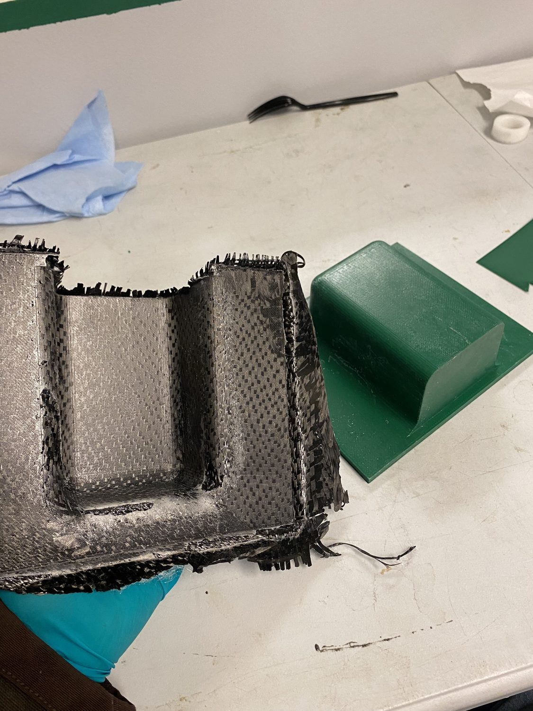
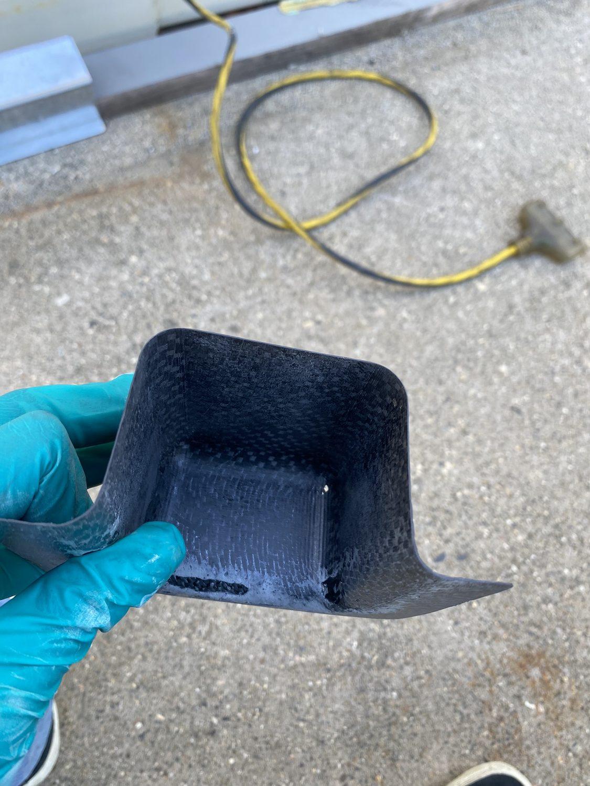
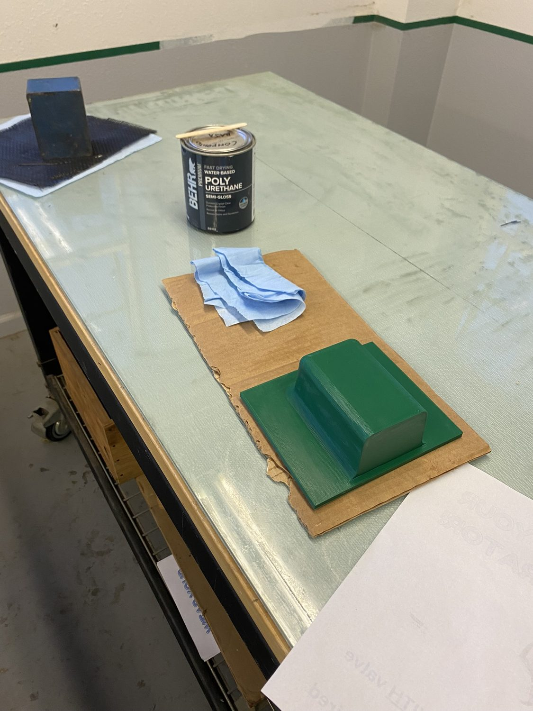

PROJECT 09 / 11 · Design → Fabrication
Radio Holder
A fully self-designed carbon fiber radio mount — CAD, mold, and layup from start to finish.
PartRadio holder
CADFusion 360
Tooling3D-printed mold
ProcessWet layup
ScopeDesign → part
Overview
I designed the radio holder end to end: CAD in Fusion 360, a simple 3D-printed mold, then a carbon fiber wet layup and post-processing to final shape — a small but complete design-to-part exercise.
Highlights
- Fusion 360 CAD
- 3D-printed mold tooling
- Carbon fiber wet layup
- Full design-to-fabrication ownership
Gallery — 03 frames


